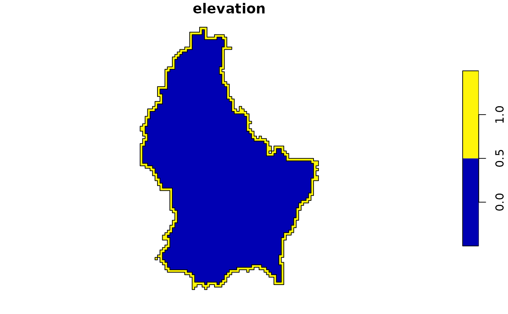
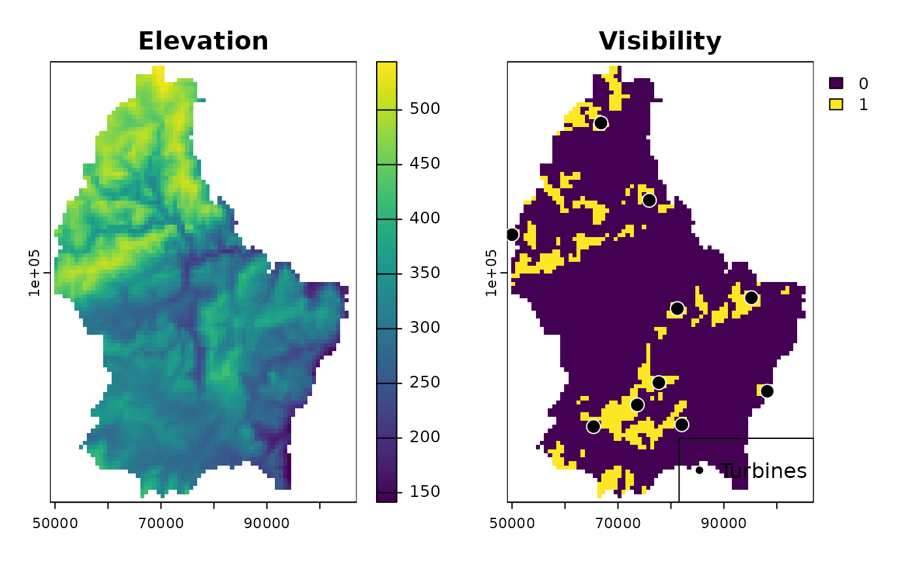

Calculate and plot visibility for given points in a given area.
Arguments
- r
The elevation SpatRaster
- turbine_locs
Coordinates, SpatialPoint or SimpleFeature Points representing the wind turbines
- h1
A single number or numeric vector giving the extra height offsets for the
turbine_locs- h2
The height offset for Point 2
- plot
Should the result be plotted. Default is
TRUE- ...
forwarded to
terra::plot
Examples
# \donttest{
library(sf)
library(terra)
#> terra 1.8.10
f <- system.file("ex/elev.tif", package = "terra")
r <- rast(f)
x <- project(r, "EPSG:2169")
shape <- sf::st_as_sf(as.polygons(terra::boundaries(x)))
plot(shape)

st_crs(shape) <- 2169
locs <- st_sample(shape, 10, type = "random")
plot_viewshed(x, locs, h1 = 0, h2 = 0, plot = TRUE)

#> class : SpatRaster
#> dimensions : 108, 75, 1 (nrow, ncol, nlyr)
#> resolution : 771.9715, 771.9715 (x, y)
#> extent : 49072.34, 106970.2, 56572.15, 139945.1 (xmin, xmax, ymin, ymax)
#> coord. ref. : LUREF / Luxembourg TM (EPSG:2169)
#> source(s) : memory
#> varname : spat_1fe4bfb8608_8164_2_o8up7yuDdJ6XHBX
#> name : viewshed
#> min value : 0
#> max value : 1
# }